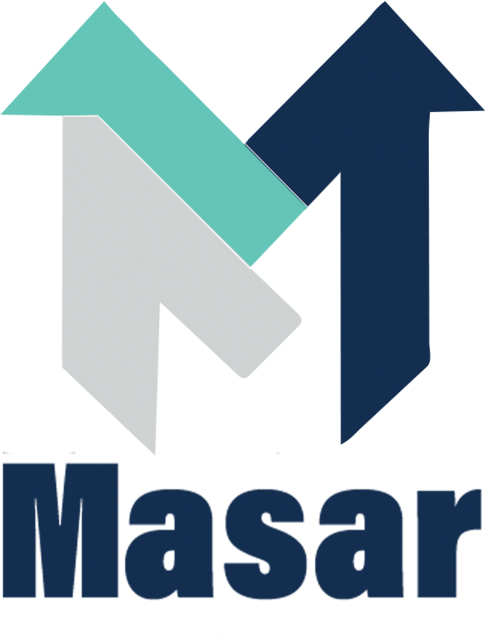

Standard · auf Weiß
Negativ · auf NavyRund um das Logo bleibt mindestens die Breite eines Pfeilschafts frei (gestrichelte Linie). Kein Text, keine Bilder, keine Kanten in diesem Bereich.
Druck: 18 mm Breite · Bildschirm: 64 px. Darunter nur das Zeichen (Pfeil-M) ohne Schriftzug verwenden.
✕ verzerren, drehen oder neu einfärben · ✕ Schatten, Kontur, Verlauf · ✕ auf unruhigen Fotos ohne Fläche · ✕ Schriftzug in anderer Schrift nachbauen
Verhältnis in einer Gestaltung (ungefähr): viel Weiß/Off-White, Navy als Hauptfarbe, Teal sparsam als Akzent.
Teal (#58D0BD) als Schrift auf Weiß ist zu hell – dafür Teal dunkel (#177567) nehmen. Für Druck (CMYK) und Folien die Werte einmal mit der Druckerei bzw. einem Farbfächer abgleichen.
Barlow Condensed Black, immer in GROSSBUCHSTABEN, eng und kräftig. Ein Wort darf in Teal hervorgehoben werden.
Wir planen, produzieren und montieren Werbetechnik für Geschäfte, Praxen und Marken – mit einem festen Ansprechpartner.
Barlow Regular für Text, Medium/SemiBold für Hervorhebungen. Kein Kursiv, keine Fremdschriften. Beide Schriften sind frei (Google Fonts) und liegen im Ordner /fonts.
Masar ist der feste Partner für Werbetechnik von Geschäften, Praxen und Marken: Schaufenster, Schilder, Leuchtreklame und Fahrzeuge – geplant, produziert und montiert aus einer Hand, in Berlin, NRW und Hamburg.
Unser Claim (festgelegt 03.11.2026)| So nicht | So |
|---|---|
| „Wir sind die Besten in Berlin!!!“ | „Montage ca. 3 Wochen nach Freigabe und Anzahlung.“ |
| „Super günstige Preise!“ | „Festpreis nach Aufmaß – ohne versteckte Kosten.“ |
SchaufensterSchilderLeuchtreklameFahrzeugeDruckWerkstatt
Logo oben links, Navy-Titel in Barlow Condensed, Teal-Linie, Stempel unten. Immer mit Angebots-/Rechnungsnummer.
Einheitliche Signatur (Logo, Name, Telefon, Website). Absender „Masar Werbeagentur“.
Navy-Grundfarbe, Logo negativ, Website + Telefon groß. Team-Shirts navy mit Logo auf der Brust.
Profilbild: Zeichen auf Weiß. Beiträge mit Navy-Fläche oder echtem Foto, Titel in Barlow Condensed.
Navy auf Weiß, Logo links, Daten in Barlow. Rückseite Navy mit Logo negativ.
Diese Farben und Schriften sind bereits umgesetzt (masar-werbeagentur.de) – neue Seiten nur damit gestalten.